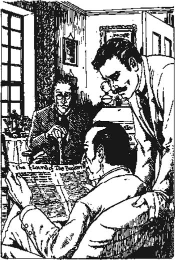

Listen to Part 1:
2

Lời nguyền của dòng họ Baskerville
Bác sĩ Mortimer ngồi xuống. Sherlock Holmes và tôi lắng nghe câu chuyện của ông ấy.
Bác sĩ Mortimer nói: 'Tôi là bác sĩ và hành nghề ở vùng quê'. 'Tôi sống và làm việc trên cao nguyên Dartmoor. Và như các ông biết đấy, Dartmoor là một nơi rộng lớn hoang dã. Chỉ có một ngôi nhà lớn trên cao nguyên Dartmoor – dinh thự Baskerville. Chủ nhân của ngôi nhà là ngài Charles Baskerville. Tôi vừa là bác sĩ vừa là bạn của ngài ấy'.
Holmes nói: 'Tôi đã đọc về cái chết của ngài ấy trên tờ báo The Times'.
Bác sĩ Mortimer nói: 'Đó là ba tháng trước'. 'Tờ báo có đưa tin về cái chết của ngài ấy, nhưng không đưa đầy đủ sự việc'.
Sherlock Holmes hỏi: 'Có điều gì lạ về cái chết của ngài ấy không?'.
Bác sĩ Mortimer nói: 'Tôi không chắc lắm'. 'Có một câu chuyện về lời nguyền giáng xuống dòng họ Baskerville. Ngài Charles tin vào câu chuyện cổ đó'.
Tôi hỏi: 'Lời nguyền ư? Ông muốn nói gì?'.
Bác sĩ Mortimer nói: 'Đây là câu chuyện'. Ông lấy một tờ giấy lớn ra khỏi túi. 'Làm ơn đọc giúp tôi. Đây là câu chuyện về lời nguyền của dòng họ Baskerville'.
Listen to Part 2:
Holmes cầm tờ giấy và đọc. 'Có tiêu đề là Con chó săn của dòng họ Baskerville', ông ấy nói. Ông ấy đưa tôi tờ giấy. Đây là nội dung:
Vào năm 1645, ngài Hugo Baskerville là chủ nhân của dinh thự Baskerville. Ngài Hugo là một người đàn ông tàn nhẫn và không tin vào Chúa. Ngày nào ông cũng đi săn và uống rượu với một nhóm bạn ngông cuồng.
Một người nông dân trên cao nguyên Dartmoor có một cô con gái xinh đẹp. Ngài Hugo muốn cưới cô gái đó, nhưng cô rất sợ ông ta. Cha của cô gái bảo ngài Hugo tránh xa trang trại của mình. Ngài Hugo vô cùng tức giận.
Một ngày nọ, khi người nông dân đang làm việc trên cánh đồng, ngài Hugo cưỡi ngựa cùng với bạn bè đến trang trại. Họ bắt cô gái và đưa cô về dinh thự Baskerville.
Cô gái tội nghiệp rất kinh hãi. Ngài Hugo nhốt cô trong một căn phòng ngủ. Sau đó, ông ta bắt đầu uống rượu với nhóm bạn của mình. Khi đã say, ông ta trở nên hung dữ và tàn bạo hơn. Ông ta quát mắng và đánh đập đàn em của mình.
Cô gái sợ hãi chờ đợi cho đến khi trời tối. Sau đó, cô mở một cánh cửa sổ và trốn thoát khỏi dinh thự Baskerville.

'"Làm ơn đọc giúp tôi. Đây là câu chuyện về lời nguyền của dòng họ Baskerville'".
Trang trại của cha cô cách đó khoảng bốn dặm. Trời đã tối, nhưng cô vẫn có thể đi theo đường mòn dưới ánh trăng. Cô bắt đầu chạy băng qua đồng cỏ tối tăm.
Ngài Hugo đến phòng của cô gái. Nó trống không và ngài Hugo rất tức giận. Ông ta chạy đến chỗ đàn em của mình và nhảy lên chiếc bàn nơi họ đang uống rượu. Ông ta đá bay đĩa và cốc ra khỏi bàn. 'Mang ngựa ra!' ông ta hét lên. 'Đi bắt con nhỏ đó!'.
Listen to Part 3:
Tất cả bọn họ chạy ra ngoài và nhảy lên ngựa. Ngài Hugo nuôi một bầy chó săn để đi săn. 'Hãy để chó tìm ả ta!' ông ta hét lên. 'Quỷ tha ma bắt nếu ta không bắt được ả!'.
Những con chó chạy băng qua đồng cỏ tối tăm. Ngài Hugo và đàn em của ông ta cưỡi ngựa đuổi theo. Những con chó sủa và ngài Hugo hét lớn.
Sau đó, họ nghe thấy một tiếng động khác. Nó to hơn tiếng sủa và tiếng hét. Những con chó dừng lại và lắng nghe. Chúng sợ hãi.
Những người đàn ông cũng nghe thấy tiếng động đó. Đó là tiếng hú to và sâu – tiếng hú của một con chó khổng lồ giữa đêm trăng.
Những người đàn ông dừng ngựa lại, nhưng ngài Hugo vẫn tiếp tục cưỡi đi. Ông ta muốn bắt cô gái.
Ngài Hugo không bắt được cô gái. Bỗng nhiên, con ngựa của ông ta dừng lại và hất ông xuống đất. Con ngựa chạy mất vì sợ hãi.
Dưới ánh trăng, những người đàn ông nhìn thấy một con vật đen kỳ lạ. Nó trông giống như một con chó với đôi mắt đỏ rực. Nhưng nó to bằng một con ngựa. Tất cả bọn họ đều rất sợ hãi.
Con chó đen khổng lồ nhảy vào ngài Hugo Baskerville và giết chết ông ta. Những người đàn ông khác chạy trốn vào bóng đêm và không bao giờ còn nhìn thấy ngài Hugo nữa.
Kể từ đó, nhiều người con trai của dòng họ Baskerville đã chết khi còn trẻ. Nhiều người trong số họ đã chết một cách kỳ lạ. Đây chính là lời nguyền của dòng họ Baskerville. Con chó đen – con chó săn của dòng họ Baskerville – vẫn đi trên đồng cỏ vào ban đêm.
Bác sĩ Mortimer hỏi: 'Này, thưa ông Holmes, ông nghĩ gì về câu chuyện này?'.
Listen to Part 4:
Sherlock Holmes nói: 'Tôi không nghĩ đó là một câu chuyện có thật'. 'Tại sao ông lại đưa tôi câu chuyện này? Ông có tin vào nó?'.
Bác sĩ Mortimer trả lời: 'Trước khi ngài Charles Baskerville mất, tôi không tin vào câu chuyện đó'. 'Nhưng ngài Charles tin vào nó. Câu chuyện đó khiến ngài ấy lo lắng. Ngài ấy bị ốm và tim yếu'.
Tôi hỏi: 'Tại sao ngài ấy lại tin vào câu chuyện này?'.
Bác sĩ Mortimer trả lời: 'Bởi vì ngài ấy nhìn thấy con chó săn trên đồng cỏ'. 'Hoặc, ngài ấy nghĩ mình đã nhìn thấy nó. Khi ngài Charles kể câu chuyện này cho tôi, tôi bảo ngài ấy nên đi nghỉ. Tôi bảo ngài ấy đến Luân Đôn vài tuần và quên hết lời nguyền đó đi'.
Tôi hỏi: 'Ngài ấy có đi nghỉ không?'.
Bác sĩ Mortimer nói: 'Không'. 'Ngài ấy định đến Luân Đôn vào thứ sáu tuần sau. Nhưng, vào thứ năm buổi tối, ngài ấy đi dạo ở rìa đồng cỏ. Và ngài ấy không bao giờ trở về'.
Tôi hỏi: 'Ngài ấy đã chết như thế nào?'.
Bác sĩ Mortimer trả lời: 'Ngài ấy chết vì đau tim'. 'Người hầu của ngài ấy đã đến gọi tôi. Tôi tìm thấy ngài Charles gần nhà, trên rìa đồng cỏ. Ngài ấy đang chạy trốn khỏi một thứ gì đó khi chết. Tôi chắc chắn là như vậy. Tôi nghĩ ngài ấy đã rất sợ hãi một thứ gì đó'.
Holmes hỏi: 'Sợ hãi ư? Ngài ấy đang chạy trốn khỏi thứ gì?'.
Bác sĩ Mortimer nói: 'Tôi nhìn xuống mặt đất nơi ngài Charles đã đi qua. Tôi thấy dấu chân của ngài ấy'. 'Nhưng còn có những dấu chân khác trên mặt đất. Đó không phải là dấu chân của một người đàn ông. Đó là dấu chân của một con chó săn khổng lồ!'.
Mục lục
- Trang tiêu đề
- Mục lục
- Ghi chú về câu chuyện này
- Các nhân vật trong câu chuyện này
- 1 Ngài Sherlock Holmes
- 2 Lời nguyền dòng họ Baskerville
- 3 Vấn đề
- 4 Ngài Henry Baskerville
- 5 Chiếc ủng bị ăn trộm
- 6 Lâu đài Baskerville
- 7 Họ Stapleton của ngôi nhà Merripit
- 8 Báo cáo đầu tiên của bác sĩ Watson
- 9 Đèn trên đồng hoang
- 10 Người đàn ông trên đồng hoang
- 11 Trại High Tor
- 12 Gài bẫy
- 13 Con chó săn của dòng họ Baskerville
- 14 Trở về phố Baker
- Điểm cần hiểu
- Danh sách tiêu đề ở cấp độ tiểu học
- Trang bản quyền